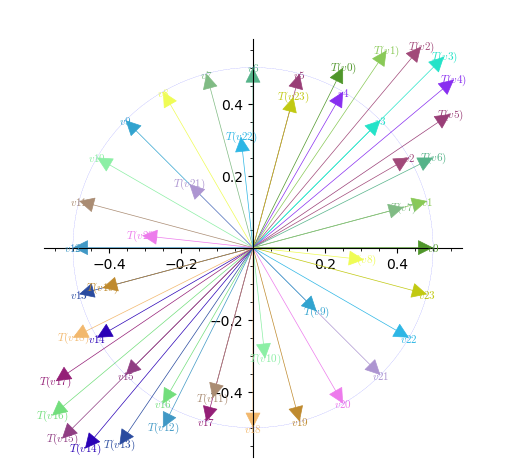

In this chapter, we extend our study of linear transformations to the concepts of eigenvalues and eigenvectors, essential for understanding how certain vectors retain their direction under transformation—merely being scaled by a scalar factor.
Throughout the chapter, we will combine conceptual insight with computational exploration using SageMath, helping you see not only “what” eigenvalues and eigenvectors are, but also “how” to compute them effectively and “where” they matter in applications that span mathematics and applied sciences.
Suppose \(T\) is a linear map from a vector space \(V\) to itself. For a given \(v\text{,}\)\(T(v)\) is a vector in \(V\text{.}\) Look the Figure 5.1.1 in which image of vectors \(v_1,\ldots v_{24}\) under the linear map \(T(x,y)=(x/2+y,x+y/2)\) are shown. Notice that \(v_3\) and \(T(v_3)\) are parallel, similarly \(v_{21}\) and \(T(v_{21})\) are parallel.

Figure5.1.1.Image of vectors under \(T(x,y)=(x/2+y,x+y/2).\)
You can also observe that \(v_{15}\) and \(T(v_{15})\) are parallel, but this this expected as \(v_{15}=-v_3\text{.}\) Similarly \(v_{9}\) and \(T(v_{9})\) are parallel. Such vectors are called eigenvectors of \(T\text{.}\) In particular, \(v\) and \(T(v)\) are parallel, then \(T(v)=\lambda v\) for some \(\lambda\in \R\text{,}\) such a \(\lambda\) is called the eigenvalue corresonidng to eigenvector \(v\text{.}\) What happens if \(v=0\text{?}\)
You can also explore the same while rotating a vector \(v\) and observing what happens to its image using the interactive diagram below (see Figure 5.1.2).
Let \(T\) be a linear transformation from \(\mathbb{R}^n\to \R^n\text{.}\) A real number (scalar) is called an eigenvalue of \(T\) if there exists a non zero vector \(v\in \R^n\) (called an eigenvector corresponding to eigenvalue \(\lambda\)) if \(T(v)=\lambda v\text{.}\) That is, if \(T(v)\) is parallel to \(v\text{.}\)
If \(A\) is an \(n\times n\) real matrix matrix, then we know that \(T_A(x)=Ax\) is a linear transformation induced by \(A\text{.}\) We can define eigenvalue of \(A\) as eigenvalue of \(T_A\text{.}\) In particular, real number is called an eigenvalue of \(A\) if there exists a non zero vector \(v\in \R^n\) (called an eigenvector corresponding to eigenvalue \(\lambda\)) if \(Av=\lambda v\text{.}\)
Let \(A=\left(\begin{array}{rr} 1 \amp 2 \\ -1 \amp 4 \end{array} \right)\text{.}\) Consider a vector \(u=\begin{pmatrix}1\\1 \end{pmatrix}\text{.}\) Then \(Au=\begin{pmatrix}3\\3 \end{pmatrix} =3\begin{pmatrix}1\\1 \end{pmatrix} =3u\text{.}\) Hence \(u\) is an eigenvector and \(\lambda = 3\) is an eigenvalue.
Consider \(v=\begin{pmatrix}2\\1 \end{pmatrix}\text{.}\) Then it is easy to check that \(Av=\begin{pmatrix}4\\2 \end{pmatrix} =2\begin{pmatrix}2\\1 \end{pmatrix}\text{.}\) Hence \(v\) is also an eigenvector and \(\lambda = 2\) is an eigenvalue.
If \(T\) is an identity transformation from \(\R^n\to \R^n\text{,}\) then every nonzero vector is an eigenvector corresponding the eiegenvalue 1. The same is true for \(n\times n \) identity matrix.
Consider the matrix of rotation \(R_\theta\) in anti-clock wise by an angle \(\theta\neq n\pi\) for \(n\in \Z\text{.}\) Then it is easy to see that \(R_\theta\) does not have an eigenvector. Thus not all square matrices have eigenvectors.
If \(\lambda\) is an eigenvalue of \(A\) with corresponding eigenvector \(v\neq 0\text{.}\) Then any scalar multiple of \(v\) is also an eigenvector corresponding to the same eigenvalue \(\lambda\text{.}\)
Let us analyze the notion of eigenvalues and eigenvector. If \(v\) is a eigenvector corresponding to an eigenvalue \(\lambda\text{.}\) Then \(Av=\lambda v\text{.}\) This implies \((\lambda I-A)v=0\text{,}\) where \(I\) is \(n\times n\) identity matrix. This means that the homogeneous system \((\lambda I-A)x=0\) has a non zero solution, namely \(v\text{.}\) Hence \(\det{(\lambda I-A)}=0\text{.}\) Notice that \(\det(A-\lambda I)\) is a polynomial (called the characteristic polynomial of \(A\)) of degree \(n\) in \(\lambda\text{.}\) Thus if \(Av=\lambda v\text{,}\) then \(\lambda\) is a root of the the characteristic polynomial \(\det(A-\lambda I)\text{.}\) By fundamental theorem of algebra an \(n\times n\) real matrix can have at most \(n\) real eigenvalues. The equation \(\det(A-\lambda I)=0\) is called characteristic equation of \(A\text{.}\)
Let \(A\) be an \(n\times n\) real matrix. Then (i) the sum of eigenvalues of \(A\) is the trace of \(A\) and (ii) the product of eigenvalues is the determeninat of \(A\text{.}\)
Let \(A = \begin{pmatrix}1 \amp 1 \amp 1\\ 1 \amp 1 \amp 1\\1 \amp 1 \amp 1 \end{pmatrix}\text{.}\) What are eigenvalues and eigenvectors of \(A\text{?}\)
Note that \(Ae_1=Ae_2=Ae_3=e_1+e_2+e_3\text{.}\) This means \(A(e_1+e_2+e_3)=3(e_2+e_2+e_3)\text{.}\) Hence \(3\) is an eigenvalue and \(e_1+e_2+e_3=\begin{pmatrix}1 \\1\\1 \end{pmatrix}\) is an eigenvectors w.r.t. eigenvalue 3.
Also \(A(e_1-e_2)=0\text{.}\) Hence \(0\) is an eigenvalue and \(e_1-e_2=\begin{pmatrix}1 \\-1\\0 \end{pmatrix}\) is an eigenvector corresponding to the eigenvalue 0. Also, \(e_1-e_3\) and \(e_2-e_3\) are also eigenvectors corresponding to the eigenvalue 0.
The trace of \(A\) is 3. The \(\det{(A)}=2t^3 - 3t^2 + 1=(2t + 1)(t - 1)^2\text{.}\) Since sum of eigenvalues is 3 and the product of eigenvalues is \(\det{(A)}\text{,}\) it is easy to guess that \(\lambda_1 =2t+1\text{,}\)\(\lambda_2=\lambda_3=1-t\) are eigenvalues of \(A\text{.}\)
We can adopt a procedure similar to Example 5.1.10 to show that \(e_1+e_2+e_3\) is an eigenvector corresponding to the eigenvalue \(1+2t\text{.}\) Similarly, \(e_1-e_2,e_2-e_3, e_1-e_3\) are eigenvectors corresponding to the eigenvalue \(1-t\text{.}\)
It is easy to see that characteristic polynomial \(\det(A-\lambda I)\) has roots \(\lambda=1, \lambda=-2, \lambda=2\text{.}\) Thus \(A\) has eigenvalues \(1, -2, 2\text{.}\)
Let us find eigenvectors with respect to the eigenvalue \(\lambda=1\text{.}\) Let \(v=\begin{pmatrix}x_1\\x_2\\x_3 \end{pmatrix}\) be an eigenvector corresponding to \(\lambda=1\text{.}\) Then \(Av=\lambda v=v\text{.}\) That is,
Solving the above system, we get \(x_1=-x_2, x_2=x_3\text{.}\) Thus \(v=\begin{pmatrix}\alpha\\-\alpha\\-\alpha \end{pmatrix}\) for \(\alpha\in \R\) is an eigenvector. In particular, \(v=\begin{pmatrix}1\\-1\\-1 \end{pmatrix}\) is an eigenvector of \(A\) corresponding to \(\lambda=1\text{.}\)
Similarly show that \(\begin{pmatrix}0\\1\\1 \end{pmatrix}\) is an eigenvector of \(A\) corresponding to \(\lambda=2\) and \(\begin{pmatrix}8/7\\-5/7\\1 \end{pmatrix}\) is an eigenvector of \(A\) corresponding to \(\lambda=-2\)
The characteristic equation of \(A\) is given by \(\det(A-\lambda I)=\begin{vmatrix}-\lambda\amp 1\\-1\amp -\lambda\end{vmatrix}=\lambda^2+1\text{.}\) Hence eigenvalues of \(A\) are \(\lambda=\pm i\text{.}\)
Let us find eigenvectors with respect to the eigenvalue \(\lambda=i\text{.}\) Let \(v=\begin{pmatrix}x_1\\x_2 \end{pmatrix}\) be an eigenvector corresponding to \(\lambda=i\text{.}\) Then \(Av=\lambda v=i v\text{.}\) That is,
Now it is easy to see that \(v=\begin{pmatrix}1\\ i \end{pmatrix}\) is an eigenvector of \(A\) corresponding to \(\lambda=i\text{.}\) Similarly one can show that \(v=\begin{pmatrix}1\\ -i \end{pmatrix}\) is an eigenvector of \(A\) corresponding to \(\lambda=-i\text{.}\)
the collection of all eigenvectors of \(A\) corresponding to \(\lambda\) is a subspace of \(A\text{,}\) called the eigenspace of \(A\). The dimension of \(E_\lambda\) is called the geometric multiplicity of \(A\text{.}\)
Geometric multiplicity of an eigenvalue is always less than or equals to its algebraic multiplicity. That is, if \(m\) is the geometric multiplicity of \(\lambda\) then \(\dim{(E_\lambda)} \leq m\text{.}\)
The geometric multiplicity of an eigenvalue \(\lambda\) is the nullity of \(A-\lambda I\) which is the dimension of null space of \(A-\lambda I\text{.}\)
Consider the matrix \(A=\begin{pmatrix}-1\amp 1 \amp 0\\0 \amp -1 \amp 1\\0 \amp 0 \amp -1 \end{pmatrix}\text{.}\) It is easy to check that \(\det{(xI-A)}=(x+1)^3\text{.}\) That is, \(A\) has only one eigenvalue of \(\lambda =-1\) of algebraic multiplicity 3. It is easy to see that \(e_3=(0,0,1)\) is an eigenvector corresponding to \(\lambda=-1\text{.}\) We have
\begin{equation*}
A -\lambda I = \begin{pmatrix}0\amp 1 \amp 0\\0 \amp 0 \amp 1\\0 \amp 0 \amp 0 \end{pmatrix}\text{.}
\end{equation*}
Since the rank of \(A-\lambda I\) is 2. By rank-nullity theorem, nullity of \(A -\lambda I\) is 1. Hence the geometric multiplicity of \(\lambda\) is 1 where as its algebraic multiplicity is 3.
If \(\lambda\) is an eigenvalue of \(A\text{,}\) then \(\lambda^2\) is an eigenvalue of \(A^2\text{.}\) In general, \(\lambda^k\) is an eigenvalue of \(A^2\) for any \(k\in \N\text{.}\)
If \(\lambda\) is an eigenvalue of \(A\) and \(p(x)=c_0+c_cx+c_2x^2+\cdots c_kx^k\) is a polynomial in \(x\text{,}\) then \(p(\lambda)\) is an eigenvalue of \(p(A)=c_0I+c_cA+c_2A^2+\cdots c_kA^k\text{.}\)
Two matrices \(A\) and \(B\) are called similar if there exists a matrix \(P\) such that \(B=P^{-1}AP\text{.}\) Similar matrices have same eigenvalues.
If \(\lambda_1\) and \(\lambda_2\) are distinct eigenvalues of \(A\) then eigenvectors \(v_1\) and \(v_2\) corresponding to \(\lambda_1\) and \(\lambda_2\) are linearly independent. Can you generalize this?
If \(T\) is a linear transformation from \(\R^n\to \R^m\text{.}\) Fix a basis \(\beta\) of \(\R^n\text{.}\) Let \(A=[T]_\beta\) be the matrix of \(T\) with respect to \(\beta\text{.}\) Then \(A\) and \(T\) have the same eigenvalues. Furthermore, eigenvalues of \(T\) are independent of the basis.
Let \(\lambda_1\) and \(\lambda_2\) be with distict eigenvalues of \(A\) corresponding to the eignevectors, \(v_1\) and \(v_2\) respectively. Let \(\alpha_1\) and \(\alpha_2\) be scalars such that \(\alpha_1v_+\alpha_2 v_2=0.\text{.}\) Applying \(A\) both sides we have \(\alpha_1\lambda_1v_1+\alpha_2\lambda_2 v_2=0\text{.}\) Mutliplying the 1st equation both sides by \(\lambda_1\) both side and subtracting from the equation 2nd equation we get \(\alpha_2(\lambda_2-\lambda_1)v_2=0\text{.}\) Since \(v_2\neq 0 \text{,}\) and \(\lambda_1\neq \lambda_2\text{,}\) we have \(\alpha_2=0\text{.}\) Similarly, \(\lambda_1=0\text{.}\)
We have the following generalization. If \(v_i\) for \(i=1,\ldots, k\) are eigenvvectors with respect to distinct eigenvalues \(\lamabda_i\) for \(i=1,\ldots, k\) respectively, then \(v_1,\ldots, v_k\) are linearly independent. The prove this follows from induction on \(k\text{.}\)
Since \(T\colon \R^n\to \R^n\) is a linear transformation, it can be written as \(T(x)=M\text{,}\) where \(M\) is the matrix of \(T\) with respect to the standard basis of \(\R^n\) and that eigenvalues of \(T\) are same as eigenvalues of \(A\text{.}\) Then \(A\) and \(M\) are similar matrices. Hence they have the same eigenvalues.
Let \(A=\begin{pmatrix}1\amp 2\amp -2\\1\amp 1\amp 1\\1\amp 3\amp -1 \end{pmatrix}\) and \(B=A^3-3A+I\text{.}\) Let us find eigenvalues of \(B\text{.}\)
It is easy to the characteristic polynomial of \(A\) is given by \(\lambda^3-\lambda^2-4\lambda+4\) and \(\lambda=-2, 1, 2\text{.}\) Then eigenvalues of \(B\) are given by
(a) Let \(\lambda\) be an eigenvalues of \(A\) and \(v\text{,}\) the corresponding eigenvector of \(A\text{.}\) Then by definition \(Av=\lambda v\text{.}\) Multiplying both sides by \(\overline{v}^T\) (the conjugate transpose of the vector \(v\)), we get
It is easy to see that \(\overline{v}^TAv\) and \(\overline{v}^Tv\) are scalars and that \(\overline{v}^Tv\) is a real number. Hence the behavior of \(\lambda\) is determined by \(\overline{v}^TAv\text{.}\)
If \(A\) is a herminitan matrix then \(\overline{A}=A^T\text{,}\) also \(\overline{v}^TAv\) is scalar, implies \((\overline{v}^TAv)^T=\overline{v}^TAv\text{.}\) Hence
Now if \(A\) is a skew-hermitian matrix, then it is easy to show that \(\overline{(\overline{v}^TAv)}=-(\overline{v}^TAv)\text{.}\) Hence \(\overline{v}^TAv\) is either purely imaginary or zero. Which show \(\lambda\) is either purely imaginary of zero.
In genegarl, let \(f(x)=\alpha_0+\alpha_1 x+\alpha_2 x^2+\cdots+\alpha_kx^k\) be a polynomial of degree \(k\) and \(A\) be an \(n\times n\) real matrix. Then we can define \(f(A)=\alpha_0 I+\alpha_1 A+\alpha_2 A^2+\cdots+\alpha_k A^k\text{.}\) If \(\lambda\) is an eigenvalue of \(A\text{,}\) theh \(f(\lambda)\) is an eigenvalue of \(f(A)\text{.}\)
Note that adjugate matrix \(\text{adj}(\lambda I-A)\) is an \(n\times n\) matrix whose entries are polynomials in \(\lambda\) of degree at most \(n-1\text{.}\) Hence we may write
Multiplying the first equation by \(A^n\text{,}\) the second equation by \(A^{n-1}\text{,}\) the second last equation by \(A\) and the last equation by \(I\) and additing, we get the desired result.
It is easy to check that \(\det{(A)}=-4\text{,}\) hence \(A\) is non singular. Since \(A^3-A^2-4A+4I=0\text{,}\) multiplying both sides by its inverse, we get \(A^2-A+4I+4A^{-1}=0\text{.}\) Hence
We can also find higher powers of a matrix, using the Cayley-Hamilton theorem. For example multiplying by \(A\) to the equation, \(A^3-A^2-4A+4I=0\text{,}\) we get \(A^4-A^3-4A^2+4A=0\text{,}\) from this we have
Let \(A\) an \(n\times n\) and \(\lambda_i\) for \(1\leq i\leq n\) be eigenvalues of \(A\) then the spectral radius of \(A\) is define as \(\rho(A):=\displaystyle\max_{1\leq i\leq n}\{ |\lambda_i| \}\text{.}\)
Let \(A= \begin{pmatrix}0 \amp -1\\1 \amp 0 \end{pmatrix}\text{.}\) Then the characteristics polynomial of \(A\) is \(\det{(xI-A)}=x^2+1\text{.}\) Hence \(x=\{i,-i\}\) are roots of the characteristic polynomial. Hence \(i\) and \(-i\) are eigenvalues of \(A\text{.}\) Hence
Let \(A\) be an \(n\times n\) symmetric matrix. Then \(A\) is said to be positive definite if \(x^TAx\gt 0\) for all \(x\in \R^n\setminus \{0\}\) and \(x^TAx=0\) if and only if \(x=0\text{.}\)\(A\) is called negative definite if \(-A\) is positive definite.
Thus if \(x=\begin{pmatrix}1\\-1 \end{pmatrix}\) then \(x^TAx=-2\lt 0\text{.}\) Hence it is not a positive definite. Its easy to see that \(A\) is also not negative definite.
We have the following result about positive definite matrices known as Sylvester’s criterion. It allows us to determine if a given matrix in positive definite using the leading principal minors of the matrix.
The leading principal minors of a matrix \(A\) are \({\rm det}(A)\) and the minors obtained by successively removing the last row and the last columns. That is, the leading principal miniors of a matrix \(A\) are
Let \(A=\begin{pmatrix}2 \amp 1 \amp 1\\1\amp 2\amp 1\\1\amp 1\amp 2 \end{pmatrix}\text{.}\) For any \(x=\begin{pmatrix}x_1\\x_2\\x_2 \end{pmatrix} \in \R^2\text{,}\) we have
Note that if \(A\) is not a symmetric matrix, then the Sylvester’s criteria cannot be used to check positive definiteness. For, condider the matrix \(A=\begin{pmatrix} 1 \amp 0\\-3 \amp 1\end{pmatrix}\text{.}\) It is easy to see that all principal minors of \(A\) are positive. For \(u=\begin{pmatrix}1\\2\end{pmatrix}\text{,}\)\(u^TAu=-1\text{,}\) however for \(v=\begin{pmatrix}3\\1\end{pmatrix}\text{,}\)\(v^TAv=1\text{.}\)
Consider a linear transpfrmation \(D\colon {\cal P}_n(\R)\to {\cal P}_n(\R)\) defined by \(D(f(x))=f'(x)\text{.}\) Whar are eigenvalues and eigenvector of \(D\text{?}\)
Consider a linear transpfrmation \(T\colon {\cal P}_2(\R)\to {\cal P}_n(\R)\) defined by \(T(f(x))=xf'(x)-f(x)\text{.}\) Whar are eigenvalues and eigenvector of \(T\text{?}\)
Consider a linear transformation \(T\colon M_2(\R)\to M_2(\R)\) defined as \(T(A)=A+A^T\text{.}\) What are eigenvalues and eigenvectors of \(T\text{?}\)
Consider a linear transformation \(T\colon M_2(\R)\to M_2(\R)\) defined as \(T(A)=A-A^T\text{.}\) What are eigenvalues and eigenvectors of \(T\text{?}\)
Write matrix of each of the linear transformation with respect to the standard basis and find the eigenvalues and eigenvectors with respect to that see what will the corresponding eigenvalues and eigenvectors of \(T\text{.}\)
Let \(V\) be the set of all twice continuously differentaible functions from \(\R\) to \(\R\text{.}\) It is easy to check that it is a vector soace over \(\R\text{.}\) Consider the following linear maps: